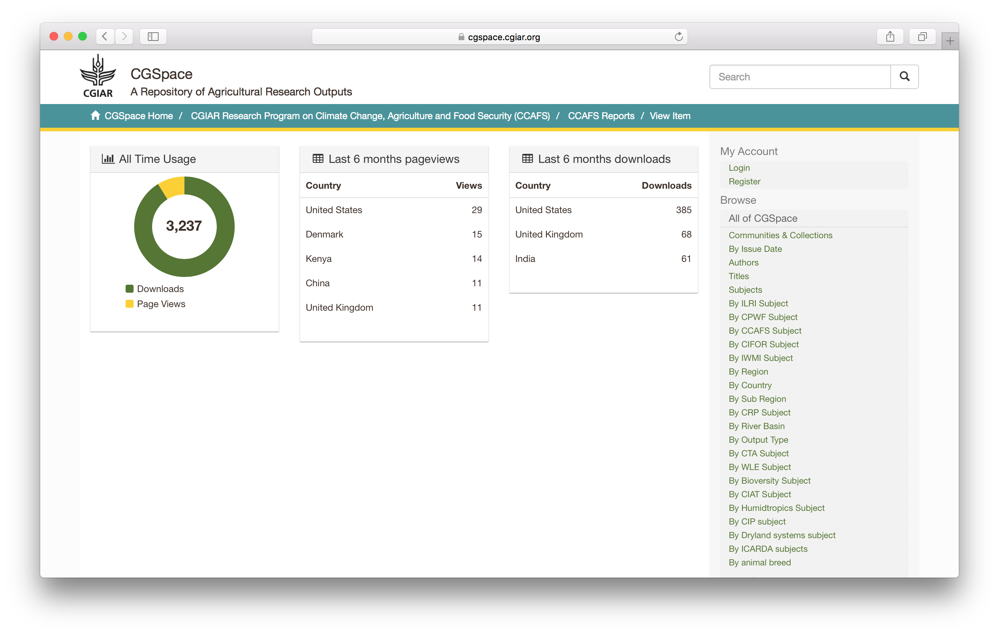
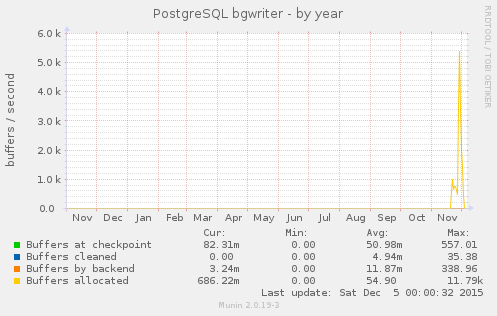
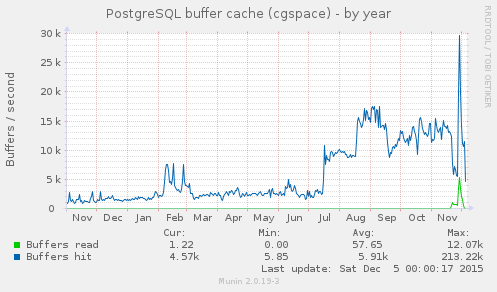
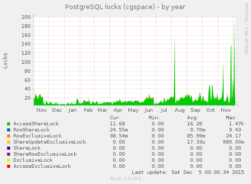
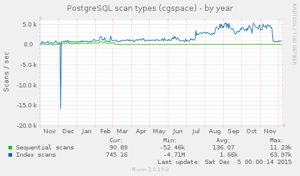

December, 2015
2015-12-02
- Replace
lzopwithxzin log compression cron jobs on DSpace Test—it uses less space:
# cd /home/dspacetest.cgiar.org/log
# ls -lh dspace.log.2015-11-18*
-rw-rw-r-- 1 tomcat7 tomcat7 2.0M Nov 18 23:59 dspace.log.2015-11-18
-rw-rw-r-- 1 tomcat7 tomcat7 387K Nov 18 23:59 dspace.log.2015-11-18.lzo
-rw-rw-r-- 1 tomcat7 tomcat7 169K Nov 18 23:59 dspace.log.2015-11-18.xz
- I had used lrzip once, but it needs more memory and is harder to use as it requires the lrztar wrapper
- Need to remember to go check if everything is ok in a few days and then change CGSpace
- CGSpace went down again (due to PostgreSQL idle connections of course)
- Current database settings for DSpace are
db.maxconnections = 30anddb.maxidle = 8, yet idle connections are exceeding this:
$ psql -c 'SELECT * from pg_stat_activity;' | grep cgspace | grep -c idle
39
- I restarted PostgreSQL and Tomcat and it’s back
- On a related note of why CGSpace is so slow, I decided to finally try the
pgtunescript to tune the postgres settings:
# apt-get install pgtune
# pgtune -i /etc/postgresql/9.3/main/postgresql.conf -o postgresql.conf-pgtune
# mv /etc/postgresql/9.3/main/postgresql.conf /etc/postgresql/9.3/main/postgresql.conf.orig
# mv postgresql.conf-pgtune /etc/postgresql/9.3/main/postgresql.conf
- It introduced the following new settings:
default_statistics_target = 50
maintenance_work_mem = 480MB
constraint_exclusion = on
checkpoint_completion_target = 0.9
effective_cache_size = 5632MB
work_mem = 48MB
wal_buffers = 8MB
checkpoint_segments = 16
shared_buffers = 1920MB
max_connections = 80
- Now I need to go read PostgreSQL docs about these options, and watch memory settings in munin etc
- For what it’s worth, now the REST API should be faster (because of these PostgreSQL tweaks):
$ curl -o /dev/null -s -w %{time_total}\\n https://cgspace.cgiar.org/rest/handle/10568/32802?expand=all
1.474
$ curl -o /dev/null -s -w %{time_total}\\n https://cgspace.cgiar.org/rest/handle/10568/32802?expand=all
2.141
$ curl -o /dev/null -s -w %{time_total}\\n https://cgspace.cgiar.org/rest/handle/10568/32802?expand=all
1.685
$ curl -o /dev/null -s -w %{time_total}\\n https://cgspace.cgiar.org/rest/handle/10568/32802?expand=all
1.995
$ curl -o /dev/null -s -w %{time_total}\\n https://cgspace.cgiar.org/rest/handle/10568/32802?expand=all
1.786
- Last week it was an average of 8 seconds… now this is 1⁄4 of that
- CCAFS noticed that one of their items displays only the Atmire statlets: https://cgspace.cgiar.org/handle/10568/42445

- The authorizations for the item are all public READ, and I don’t see any errors in dspace.log when browsing that item
- I filed a ticket on Atmire’s issue tracker
- I also filed a ticket on Atmire’s issue tracker for the PostgreSQL stuff
2015-12-03
- CGSpace very slow, and monitoring emailing me to say its down, even though I can load the page (very slowly)
- Idle postgres connections look like this (with no change in DSpace db settings lately):
$ psql -c 'SELECT * from pg_stat_activity;' | grep cgspace | grep -c idle
29
- I restarted Tomcat and postgres…
- Atmire commented that we should raise the JVM heap size by ~500M, so it is now
-Xms3584m -Xmx3584m - We weren’t out of heap yet, but it’s probably fair enough that the DSpace 5 upgrade (and new Atmire modules) requires more memory so it’s ok
- A possible side effect is that I see that the REST API is twice as fast for the request above now:
$ curl -o /dev/null -s -w %{time_total}\\n https://cgspace.cgiar.org/rest/handle/10568/32802?expand=all
1.368
$ curl -o /dev/null -s -w %{time_total}\\n https://cgspace.cgiar.org/rest/handle/10568/32802?expand=all
0.968
$ curl -o /dev/null -s -w %{time_total}\\n https://cgspace.cgiar.org/rest/handle/10568/32802?expand=all
1.006
$ curl -o /dev/null -s -w %{time_total}\\n https://cgspace.cgiar.org/rest/handle/10568/32802?expand=all
0.849
$ curl -o /dev/null -s -w %{time_total}\\n https://cgspace.cgiar.org/rest/handle/10568/32802?expand=all
0.806
$ curl -o /dev/null -s -w %{time_total}\\n https://cgspace.cgiar.org/rest/handle/10568/32802?expand=all
0.854
2015-12-05
- CGSpace has been up and down all day and REST API is completely unresponsive
- PostgreSQL idle connections are currently:
postgres@linode01:~$ psql -c 'SELECT * from pg_stat_activity;' | grep cgspace | grep -c idle
28
- I have reverted all the pgtune tweaks from the other day, as they didn’t fix the stability issues, so I’d rather not have them introducing more variables into the equation
- The PostgreSQL stats from Munin all point to something database-related with the DSpace 5 upgrade around mid–late November
   
2015-12-07
- Atmire sent some fixes to DSpace’s REST API code that was leaving contexts open (causing the slow performance and database issues)
- After deploying the fix to CGSpace the REST API is consistently faster:
$ curl -o /dev/null -s -w %{time_total}\\n https://cgspace.cgiar.org/rest/handle/10568/32802?expand=all
0.675
$ curl -o /dev/null -s -w %{time_total}\\n https://cgspace.cgiar.org/rest/handle/10568/32802?expand=all
0.599
$ curl -o /dev/null -s -w %{time_total}\\n https://cgspace.cgiar.org/rest/handle/10568/32802?expand=all
0.588
$ curl -o /dev/null -s -w %{time_total}\\n https://cgspace.cgiar.org/rest/handle/10568/32802?expand=all
0.566
$ curl -o /dev/null -s -w %{time_total}\\n https://cgspace.cgiar.org/rest/handle/10568/32802?expand=all
0.497